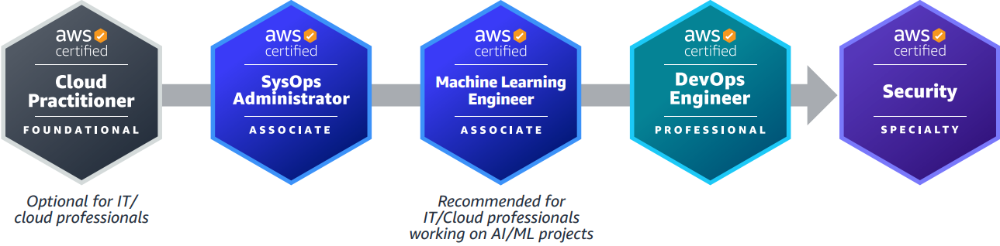

Career Aspirations
Introduction
I wish to return to the civil service particularly in law enforcement however that is unlikely. My aspiration of becoming a director will not be effected as I can choose to
do an MBA instead of the civil service Senior Leaders Scheme or Directors Leadership Programme. Outside of prestige, I want to be in a position that allows me to positively
impact peoples lives. Personal aspirations such as marriage, children and sportsmanship will have to be balanced against these lofty goals.
Leadership
I find it particularly satisfying to lead a team of individuals to achieve some positive outcome while ensuring they too feel like they are achieving something. I would like to set a workplace culture that is unique to the company or organisation that focuses on personal growth, responsibility, trust and security.
The civil service Leaders Scheme and Directors Leadership Programme or an executive MBA will help me achieve my goal.
Governance
When believing in the organisations purpose, I enjoy developing the strategy and goals to this point. Following that is to view the law, policy and finances of an organisation and coming up with plans to deliver those outcomes. Seeing such change, hopefully positive, fills me with pride and happiness. I have already gained many experiences of governance, however, governance is organisation specific so the best course of action is always learn about the organisation you work for.
DevSecOps
Development Security Operations is the idea of implementing security practices throughout the Software Development Life Cycle. By it's nature it has
focus on shifting the policy and culture of a team or organisation to produce secure products. This satisfies the above criteria.
See SecureFlag: The rise of DevSecOps for more information.
Working towards this requires:
- BCS Foundation Level Certificate in DevOps
- Security Projects Portfolio
- Learn Java, C and C# through W3Schools
- AWS DevSecOps Pathway 